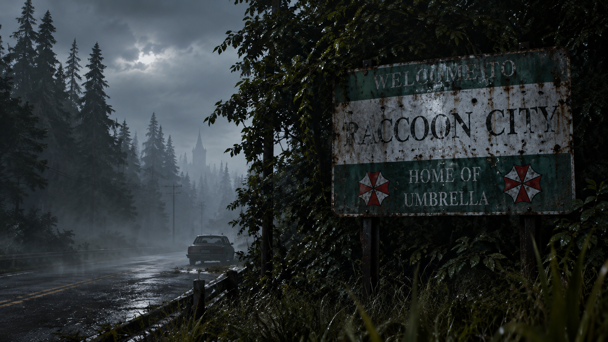
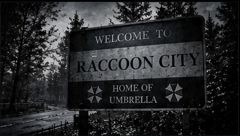

Originalmente uma pequena vila montanhosa isolada pelas densas florestas das Montanhas Arklay, Raccoon City viveu uma rápida modernização no final do século XX. Essa transformação foi impulsionada pelos investimentos massivos da Umbrella Corporation, uma gigante farmacêutica que financiou infraestruturas públicas, transportes e serviços de saúde, tornando-se o motor económico de toda a região.

Raccoon City viveu uma rápida modernização no final do século XX devido aos investimentos da Umbrella Corporation.
A Umbrella Corporation realizou pesquisas biológicas secretas nos laboratórios subterrâneos de Raccoon City. Entre seus experimentos mais perigosos esteve o Mister X (Tyrant T-103), uma bioarma com força sobre-humana e traje blindado, programada para eliminar testemunhas e ocultar as atividades da empresa.